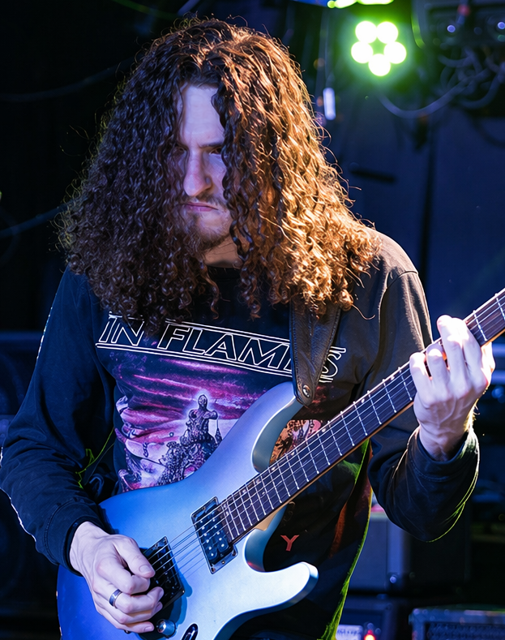
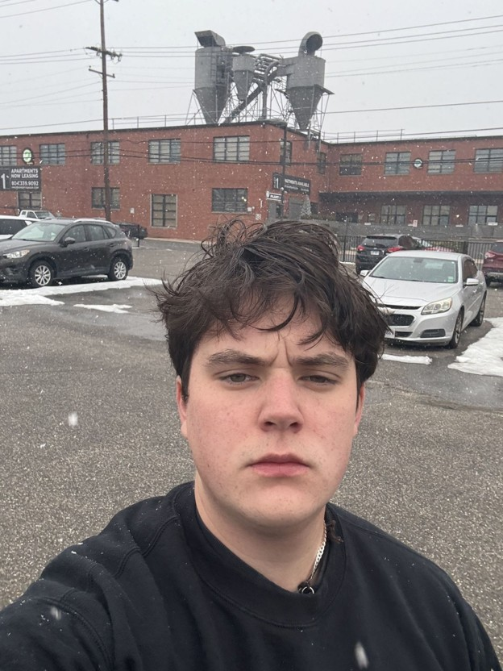
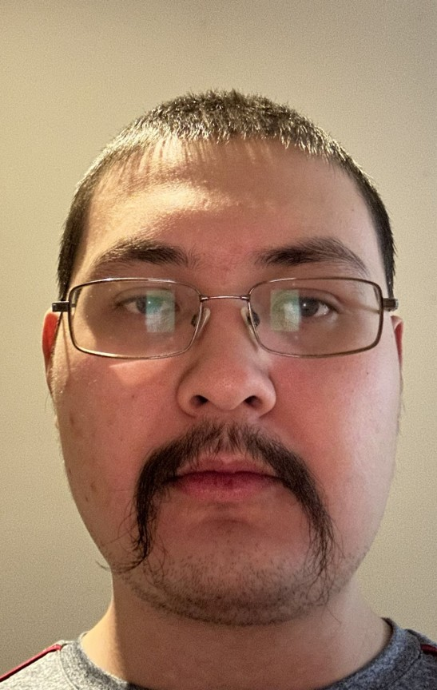
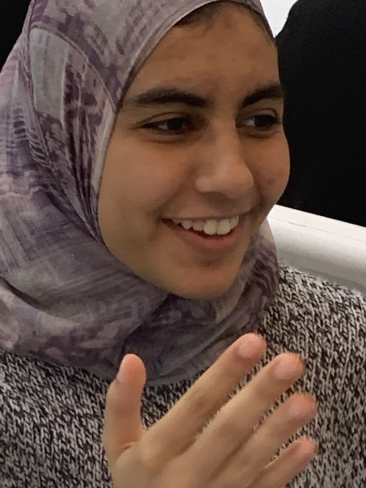
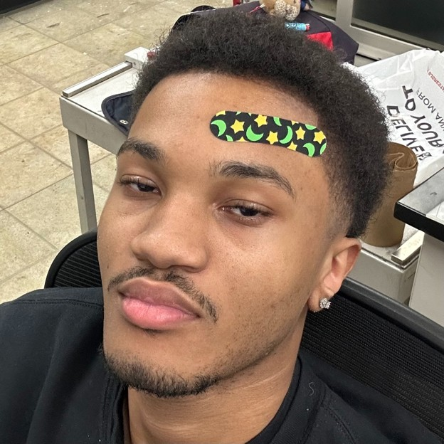
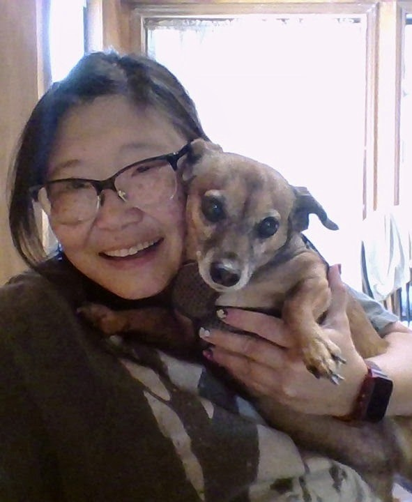
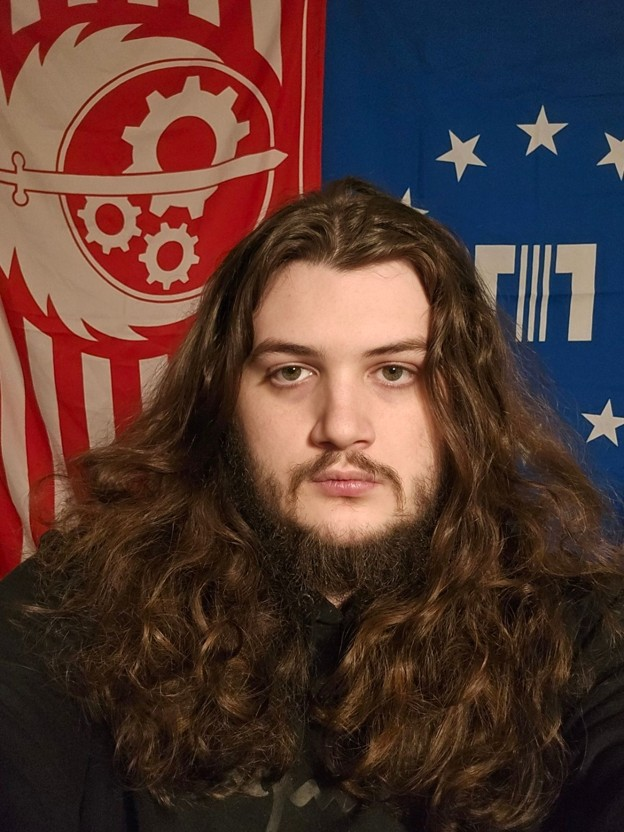
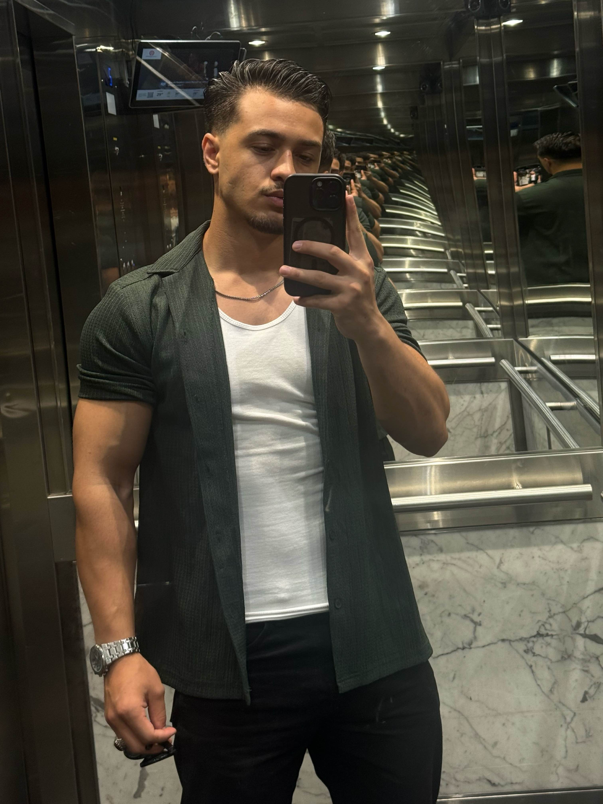
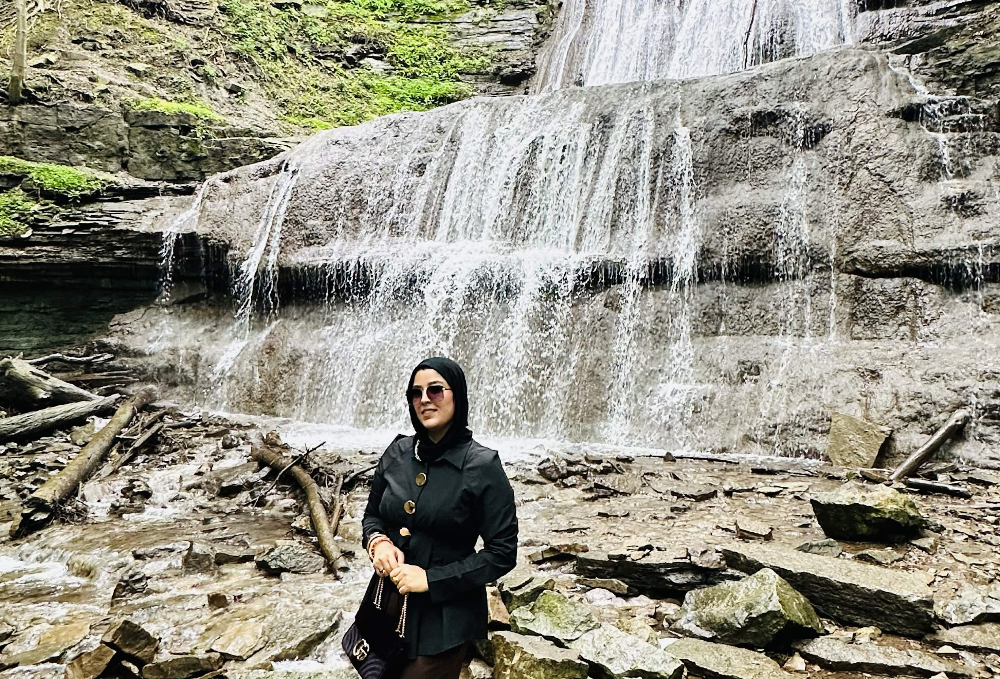

Knowledge Is Power (KIP) Project Team. Learn more about the individuals contributing their skills, experience, and creativity to the project.

Benjamin is a musician and game developer with interests in creative technology, independent game design, and a strong appreciation for cats and coffee.

Marshall enjoys outdoor activities and brings enthusiasm, adaptability, and a collaborative mindset to team projects.

Paul is an enthusiastic supporter of the Pensacola Ice Flyers and enjoys contributing his unique perspective to group efforts.

Jannah enjoys thoughtful discussion, problem-solving, and engaging with new ideas through collaboration and debate.

Chris is a dedicated worker with a strong interest in automotive technology and hands-on technical projects.

Rachel's interests include computer science, horticulture, and media arts, combining technical and creative perspectives.

Brendyn is a dedicated Pensacola Ice Flyers supporter who enjoys teamwork, community involvement, and collaborative projects.

Hasib is highly interested in problem-solving, documentation, and reporting. Outside of work and school, he enjoys weightlifting, running, and playing soccer.

Neela enjoys learning new technologies and solving problems. And brings strong communication, organizational, and teamwork skills to the project.